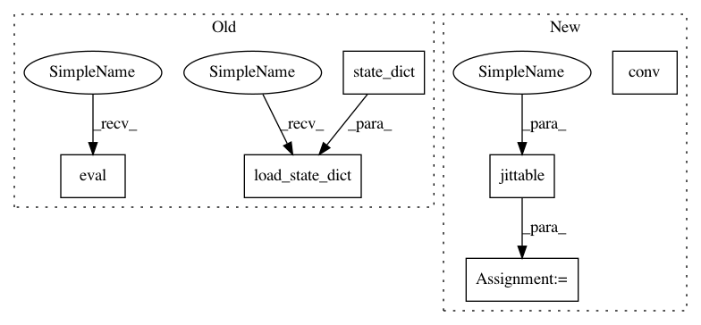

f3d0dfcb7caf50d123df02773495e5b52a92bd76,test/nn/conv/test_gat_conv.py,,test_gat_conv,#,5
Before Change
assert conv((x, x), edge_index)[0].size() == (num_nodes, 2 * out_channels)
jitcls = conv.jittable(x=x, edge_index=edge_index, full_eval=True)
jitconv = jitcls(in_channels, out_channels, heads=2, dropout=0.5)
jitconv.load_state_dict(conv.state_dict())
jittedconv = torch.jit.script(jitconv)
conv.eval()
jitconv.eval()
jittedconv.eval()
assert (torch.abs(conv(x, edge_index)[0] -
jitconv(x, edge_index)[0]) < 1e-6).all().item()
assert (torch.abs(conv(x, edge_index)[0] -
After Change
assert conv._alpha is None
model = Net2()
model.conv = conv.jittable(x=x, edge_index=edge_index)
model = torch.jit.script(model)
assert model(x, edge_index)[0].tolist() == result[0].tolist()
assert model(x, edge_index)[1][0].tolist() == result[1][0].tolist()
assert model(x, edge_index)[1][1].tolist() == result[1][1].tolist()
conv = GATConv(in_channels, out_channels, heads=2, concat=False)
out = conv(x, edge_index)
assert out.size() == (num_nodes, out_channels)
assert conv((x, x), edge_index).tolist() == out.tolist()
model = Net1()
In pattern: SUPERPATTERN
Frequency: 3
Non-data size: 6
Instances
Project Name: rusty1s/pytorch_geometric
Commit Name: f3d0dfcb7caf50d123df02773495e5b52a92bd76
Time: 2020-06-09
Author: matthias.fey@tu-dortmund.de
File Name: test/nn/conv/test_gat_conv.py
Class Name:
Method Name: test_gat_conv
Project Name: rusty1s/pytorch_geometric
Commit Name: f3d0dfcb7caf50d123df02773495e5b52a92bd76
Time: 2020-06-09
Author: matthias.fey@tu-dortmund.de
File Name: test/nn/conv/test_gat_conv.py
Class Name:
Method Name: test_gat_conv
Project Name: rusty1s/pytorch_geometric
Commit Name: f8449d8979d825d7b902bed171df80a80872e7a5
Time: 2020-06-08
Author: matthias.fey@tu-dortmund.de
File Name: test/nn/conv/test_appnp.py
Class Name:
Method Name: test_appnp
Project Name: rusty1s/pytorch_geometric
Commit Name: bef529dbb4eb10b1ec1cad14a6f630dd472dd73b
Time: 2020-06-08
Author: matthias.fey@tu-dortmund.de
File Name: test/nn/conv/test_tag_conv.py
Class Name:
Method Name: test_tag_conv